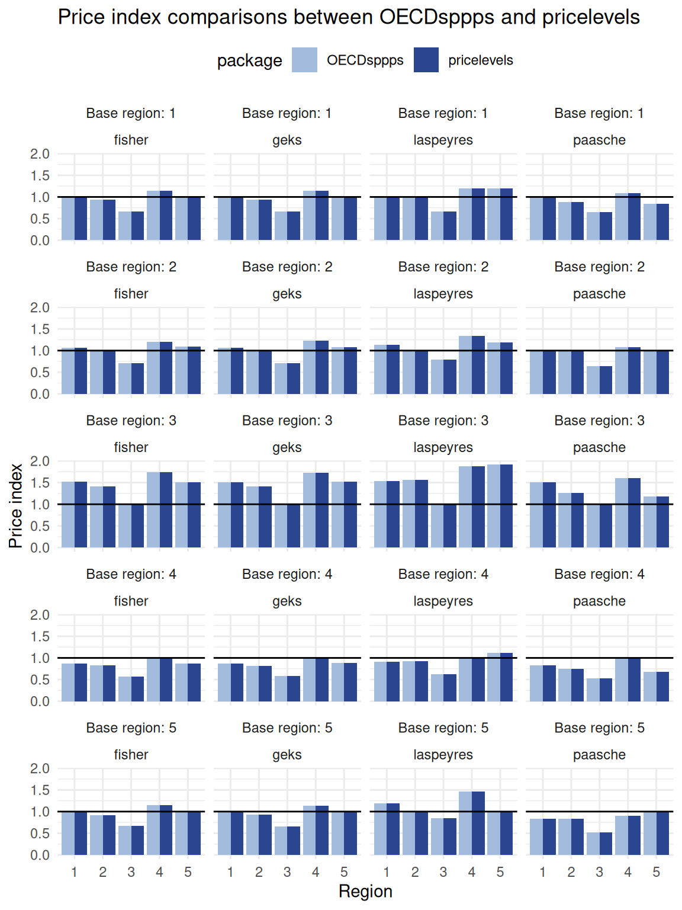

Overview
The estimation of subnational PPPs (sPPPs) starts with the item-level prices that are progressively aggregated to higher levels. In addition to aggregate subnational price indices, sub-indices, for example, at the COICOP division level, can highlight more granular regional price level differences. This process aligns with current recommendations; see ICP (2021), World Bank (2013) and European Union/OECD (2024) for more information.
Estimation steps
The estimation steps are:
Estimation of basic headings using item-level prices, where price data are aggregated up to the level of basic headings, generally without the use of expenditure weights (unless such information is available, for instance, when retail scanner data provide detailed transaction-level records).
Estimation of higher level aggregates using basic heading indices to higher levels of the classification hierarchy, at which point household expenditure data are accessible and can be applied as weighting factors
Estimation methods
The choice of estimation method depends on the availability of data and the analytical objectives of the subnational PPP exercise. When the aim is to ensure cross-country comparability and to exploit micro-level price information, the Country-Product-Dummy (CPD) - Gini-Éltetö-Köves-Szulc (GEKS) approach offers a flexible framework for estimating basic heading indices (ICP 2021).
In contrast, the Eurostat OECD method (Jevons-GEKS) methodology employed at the national level imposes more stringent data requirements. Such requirements may be more difficult to meet in the context of deriving subnational PPPs based on existing microdata, particularly regarding the representativeness of individual products across all regions (European Union/OECD 2024).
The estimation procedure in this vignette follows the CPD-GEKS approach and highlights its similarities and differences with the Jevons-GEKS approach whenever instructive. For a more comprehensive discussion on price indices see World Bank (2013) and European Union/OECD (2024).
Data used
Data used in this vignette is taken from official UK microdata from the United Kingdom Office for National Statistics (ONS). Similar data was recently used in Hearne and Bailey (2025) and is publicly available:
uk_cpi()is a snipped of the UK CPI microdata published by the United Kingdom Office for National Statistics (ONS) and contains two products: White sliced loaf branded 750 grams (COICOP 1010103) and carpenter hourly rate (COICOP 410518).uk_hhe()is a snipped of the
official UK Regional Household Final Consumption Expenditure data published by the United Kingdom Office for National Statistics (ONS) and contains regional (TL2) household final consumption expenditure shares for two products: White sliced loaf branded 750 grams (COICOP 01.1.1.3) and carpenter hourly rate (COICOP 04.3.2.5).
1 Estimation of basic headings using item-level prices
1.1 Overview
The CPD method is a regression-based approach for estimating price parities. The underlying statistical model is
\[ p_{ij} = PPP_j \times p_i \times \epsilon_{ij} \tag{1}\]
where \(PPP_j\) is the purchasing power parity of an arbitrary region \(j\), (\(r = 1,...,j,...,R\)), \(p_i\) is the average regional price of an arbitrary commodity \(i\), (\(n = 1, ..., i, ... N\)), and \(\epsilon_{ij}\) is a independently and identically distributed random variable.1 Taking logs of Equation 1 yields
\[ \begin{aligned} ln p_{ij} & = ln PPP_j + ln p_i + ln \epsilon_{ij} \\ & = \alpha_j + \gamma_i + ln \varepsilon_{ij} \end{aligned} \tag{2}\]
where \(\alpha_j\) is the the price level of region \(j\) relative to all other regions in the comparison. \(\alpha_j\) can also be expressed relative to a reference region, for example, the national price level. Then, \(\alpha_j\) represents the subnational purchasing power parity of region \(j\) given by \(\hat{PPP}_j = exp(\hat{\alpha}_j)\).
1.2 Estimation
The CPD model in Equation 2 may be interpreted as a fixed-effects specification, in which country effects yield estimates of subnational purchasing power parities, while commodity-specific effects generate estimates of subnational price levels. The model can be written as a regression equation in which all explanatory variables take the form of dummy indicators for each region and commodity.
\[ \begin{aligned} ln p_{ij} = & \alpha_1 D_1 + ... + \alpha_j D_j + ... +\alpha_R D_R + \\ & \eta_1 \mathcal{D}_1 + ... + \eta_i \mathcal{D}_i + ... + \eta_N \mathcal{D}_N + \varepsilon_{ij} \end{aligned} \tag{3}\]
and \(\varepsilon_{ij}\) are independently and identically (normally) distributed with a zero mean and variance \(\sigma^2\), that is, \(\varepsilon_{ij} \sim N(0, \sigma^2)\). The variables of interest, \(PPP_j\), can be estimated through the parameters \(\hat{\alpha}_j\) using ordinary least squares (OLS); see Section 1.1.3 Implementation.
1.3 Implementation
This section describes the implementation of the CPD using different approaches from simple cross-tabulations, standard OLS as well as using the pricelevels package (Weinand 2025) and finally the function estim_cpd() of this package using examples 1 and 2.
Examples 3 to 6 discuss further functionalities of estim_cpd().
Example 1: One product, two regions
1.3.1 Using cross-tabulations
In the CPD regression model, the intercept corresponds to the cross-regional average.
And the coefficient estimate is the price ratio of the average regional prices.
1.3.2 Using pricelevels
The same results can be obtained using cpd() from the pricelevels package.
# With pricelevels - estimation with respect to regional average
df1[, cpd(p = price, r = region, n = product, q = NULL, base = NULL)]
#> 1 2
#> 0.942809 1.060660
1.060660 / 0.942809
#> [1] 1.125
# With pricelevels - estimation with respect to region 1
df1[, cpd(p = price, r = region, n = product, q = NULL, base = "1")]
#> 1 2
#> 1.000 1.125
# With pricelevels - estimation output
df1[, cpd(
p = price, r = region, n = product, q = NULL, base = NULL,
simplify = FALSE
)]
#>
#> Call:
#> stats::lm(formula = cpd_mod, data = pdata, singular.ok = FALSE)
#>
#> Coefficients:
#> (Intercept) lnP.1
#> 3.23695 -0.05889
exp(-0.05889)
#> [1] 0.94281051.3.3 Using standard OLS
The same can be achieved with a simple OLS regression
# With OLS
pdata <- df1
# Model: add intercept to for price levels relative to base
cpd_mod <- log(price) ~ region + 1
# Transformation: equiv to "mean centring" of continuous predictor: shifting
## dummy encoding to -1/1 intercept is mean across all prices.
## Region1 is the 'main effect', i.e., the difference between levels of a given
## factor (region) across all other factors.
contrasts(x = pdata$region) <- contr.sum(levels(pdata$region))
colnames(contrasts(x = pdata$region)) <- levels(pdata$region)[-nlevels(pdata$region)]
# OLS regression
out <- lm(formula = cpd_mod, data = pdata)
out
#>
#> Call:
#> lm(formula = cpd_mod, data = pdata)
#>
#> Coefficients:
#> (Intercept) region1
#> 3.23617 -0.05898
exp(dummy.coef(out)[["region"]])
#> 1 2
#> 0.942723 1.060757
exp(3.23617 - 0.05898)
#> [1] 23.97928
exp(3.23617 + 0.05898)
#> [1] 26.98146Example 2: Two products, two regions
The procedure is identical for the more general case.
1.3.4 Using pricelevels
# With pricelevels} ------
## Estimation with respect to regional average
df2[, cpd(p = price, r = region, n = product, q = NULL, base = NULL)]
#> 1 2
#> 0.942723 1.060757
1.060757 / 0.942723
#> [1] 1.125205
## Estimation with respect to region 1
df2[, cpd(p = price, r = region, n = product, q = NULL, base = "1")]
#> 1 2
#> 1.000000 1.125205
## Estimation output
df2[, cpd(
p = price, r = region, n = product, q = NULL, base = NULL,
simplify = FALSE
)]
#>
#> Call:
#> stats::lm(formula = cpd_mod, data = pdata, singular.ok = FALSE)
#>
#> Coefficients:
#> pi.1 pi.2 lnP.1
#> 3.27554 3.19680 -0.05898
exp(-0.05898)
#> [1] 0.94272561.3.5 Using standard OLS
# OLS ------
## Data
pdata <- df2
## Model
cpd_mod <- log(price) ~ product + region - 1
## Transformation: equiv to "mean centring"
contrasts(x = pdata$region) <- contr.sum(levels(pdata$region))
colnames(contrasts(x = pdata$region)) <- levels(pdata$region)[-nlevels(pdata$region)]
## OLS regression
out <- lm(formula = cpd_mod, data = pdata)
out
#>
#> Call:
#> lm(formula = cpd_mod, data = pdata)
#>
#> Coefficients:
#> product1 product2 region1
#> 3.27554 3.19680 -0.05898
exp(dummy.coef(out)[["region"]])
#> 1 2
#> 0.942723 1.060757
1.3.6 Integration in : estim_cpd()
provides the function estim_cpd() for CPD estimation. The function provides nummerically identical results as the previously discussed estimations and provides further functionalities; see the examples below as well as the documentation of estim_cpd() for more information.
Example 3: Generic - Multiple products, and regions, with and without weights
CPD with no weights using cpd() in pricelevels (Weinand 2025) and estim_cpd().
# Estimating sPPPs with `pricelevels`, no weights --------
dt1[, cpd(p = price, r = region, n = product)]
#> 1 2 3 4 5
#> 1.0163465 0.8543248 1.1667509 0.9950373 0.9920137
# Estimating sPPPs with `estim_cpd()`, no weights ---------
dt1 |>
estim_cpd(
region = "region",
product = "product",
price = "price"
) |>
pull("sPPP")
#> 1 2 3 4 5
#> 1.0163465 0.8543248 1.1667509 0.9950373 0.9920137CPD with weights using cpd() in pricelevels (Weinand 2025) and estim_cpd().
# Estimating sPPPs with `pricelevels`, with weights --------
dt1[, cpd(p = price, r = region, n = product, w = weight)]
#> 1 2 3 4 5
#> 1.0187925 0.8460806 1.1784210 0.9964223 0.9880038
# Estimating sPPPs with `estim_cpd()`, with weights ---------
dt1 |>
estim_cpd(
region = "region",
product = "product",
price = "price",
weights_cpd = "weight"
) |>
pull("sPPP")
#> 1 2 3 4 5
#> 1.0187925 0.8460806 1.1784210 0.9964223 0.9880038Example 4: Complete regression output
The function estim_cpd() also has the option to export extended regression output of the CPD model with argument output = "Full", which summarises the key information of the estimate CPD model: It provides the ‘Regression output` as well as the individual ’Residuals’ of the CPD regression.
Information in the extended regression output is used to support the validation of CPD-based subnational PPPs at the basic-heading level; see Validation vignette.
# Estimating sPPPs with `estim_cpd()` ---------
full_est <- dt1 |>
estim_cpd(
region = "region",
product = "product",
price = "price",
output = "Full"
)
## Regression output
full_est[["Regression output"]] |>
gt() |>
fmt_number(decimals = 2) |>
sub_missing(missing_text = "")| region | sPPP | estimate | std.error | statistic | p.value | r.squared | adj.r.squared | sigma | df | df.residual | Number of products per region |
|---|---|---|---|---|---|---|---|---|---|---|---|
| 1 | 1.02 | 0.02 | 0.01 | 1.41 | 0.16 | 25.00 | |||||
| 2 | 0.85 | −0.16 | 0.01 | −13.68 | 0.00 | 25.00 | |||||
| 3 | 1.17 | 0.15 | 0.01 | 13.40 | 0.00 | 25.00 | |||||
| 4 | 1.00 | 0.00 | 0.01 | −0.43 | 0.67 | 25.00 | |||||
| 5 | 0.99 | ||||||||||
| Aggregate summary statistics | 1.00 | 1.00 | 0.06 | 29.00 | 96.00 | 126.00 |
## Residuals
full_est[["Residuals"]] |>
head() |>
gt() |>
fmt_number(decimals = 4) |>
sub_missing(missing_text = "")| region | .fitted | .resid | .std.resid |
|---|---|---|---|
| 1 | 2.7628 | −0.0022 | −0.0384 |
| 2 | 2.5891 | 0.1242 | 2.2037 |
| 3 | 2.9008 | −0.1351 | −2.3972 |
| 4 | 2.7416 | 0.0063 | 0.1117 |
| 5 | 2.7386 | 0.0068 | 0.1201 |
| 1 | 2.9156 | −0.0076 | −0.1353 |
Example 5: Duplicate region-product price pairs defaults
By default, estim_cpd() aggregates the price quotes up to region-product pairs using unweighted means whenever there are duplicate region-product pairs found in data and no weights provided. This is identical to the bahaviour of cpd() in pricelevels
# Take UK CPI microdata containing duplicate region-product pairs ---------
red <- uk_cpi |>
filter(Year == "2018") |>
select(
region = "Region",
product = "Product code",
price = "Reference quantity price"
) |>
mutate(
region = as.factor(region),
product = as.factor(product)
)
# Estimating sPPPs with `estim_cpd()` ---------
red |>
estim_cpd() |>
pull("sPPP")
#> Duplicate region-product pairs found in data and no weights provided: Data is aggregated to region-product pairs using unweighted means.
#> East Midlands East of England London
#> 0.9291930 1.0171431 1.3164839
#> North North West Northern Ireland
#> 0.9631195 0.9757530 0.9888085
#> Scotland South East South West
#> 1.0521466 0.9977087 0.9331900
#> Wales West Midlands Yorkshire and the Humberl
#> 0.8612814 1.0457363 0.9802726
# Estimating sPPPs with `pricelevels` --------
as.data.table(red)[, cpd(p = price, r = region, n = product)]
#> Warning: Duplicated observations found and aggregated
#> East Midlands East of England London
#> 0.9291930 1.0171431 1.3164839
#> North North West Northern Ireland
#> 0.9631195 0.9757530 0.9888085
#> Scotland South East South West
#> 1.0521466 0.9977087 0.9331900
#> Wales West Midlands Yorkshire and the Humberl
#> 0.8612814 1.0457363 0.9802726Example 6: Duplicate region-product price pairs with aggregation weights
estim_cpd() also provides the option to add aggregation weight in case duplicate region-product pairs found in data through the weights argument; see estim_cpd() for more information.
# Estimating sPPPs with `estim_cpd()`, with aggregation weights ---------
## No weights
red |>
mutate(w = 1) |>
estim_cpd(weights = "w") |>
pull("sPPP")
#> Duplicate region-product pairs found in data and no weights provided: Data is aggregated to region-product pairs using weighted means, with weights provided in `weights`.
#> East Midlands East of England London
#> 0.9291930 1.0171431 1.3164839
#> North North West Northern Ireland
#> 0.9631195 0.9757530 0.9888085
#> Scotland South East South West
#> 1.0521466 0.9977087 0.9331900
#> Wales West Midlands Yorkshire and the Humberl
#> 0.8612814 1.0457363 0.9802726
## Random weights
set.seed(123)
red |>
mutate(w = runif(nrow(red))) |>
estim_cpd(weights = "w") |>
pull("sPPP")
#> Duplicate region-product pairs found in data and no weights provided: Data is aggregated to region-product pairs using weighted means, with weights provided in `weights`.
#> East Midlands East of England London
#> 0.9273710 1.0071653 1.3190512
#> North North West Northern Ireland
#> 0.9643659 0.9701565 0.9970916
#> Scotland South East South West
#> 1.0489943 1.0051813 0.9315536
#> Wales West Midlands Yorkshire and the Humberl
#> 0.8701807 1.0331752 0.9852731Example 7: Duplicate region-product price pairs without aggregation
estim_cpd() also provides the option to run the CPD method on the raw data, that is, keeping duplicate region-product pairs found in the raw data by setting weights = 'raw' argument; see estim_cpd() for more information.
red |>
estim_cpd(weights = "raw") |>
pull("sPPP")
#> Duplicate region-product pairs found in data and `weights == 'raw'`: Raw data is used with no additional aggregation to region-product pairs.
#> East Midlands East of England London
#> 0.9462097 1.0266122 1.2122656
#> North North West Northern Ireland
#> 0.9913797 0.9667091 0.9616980
#> Scotland South East South West
#> 1.0780491 1.0025071 0.9247737
#> Wales West Midlands Yorkshire and the Humberl
#> 0.8891412 1.0400253 0.99691422 Estimation of higher level aggregates using basic heading indices
2.1 Overview
Aggregation beyond the basic-heading level uses the Gini-Éltetö-Köves-Szulc index (GEKS) and is implemented using function index_geks().
The GEKS method is constructed based on Fisher, Laspeyres and Paasche price indices. These index calculations are integrated in index_geks(), but the separate indices can also be calculated separately using the functions index_laspeyres(), index_paasche() and index_fisher().
2.2 Indices
Gini-Éltetö-Köves-Szulc index (GEKS)
The Gini-Éltetö-Köves-Szulc index (GEKS) method is recommended for aggregating above the basic heading levels for international and interregional comparisons, as it satisfies the necessary properties for multilateral comparisons; see ICP (2021), World Bank (2013) and European Union/OECD (2024) for more information.
Subnational PPPs for region \(k\) with reference to region \(j\) are calculated using the GEKS as
\[ sPPP_{GEKS}^{j,k} = \prod_{r=1}^R \left( sPPP_F^{j,r} \times sPPP_F^{r,k} \right)^{1/R} \]
and correspond to the geometric average of the Fisher indices of all direct comparisons between region \(j\) and region \(k\), and indirect comparisons across all regions \(R\) (\(r=1,\dots,j,k,\dots,R\)).
The Gini-Éltetö-Köves-Szulc index (GEKS) is implemented through function index_geks().
Fisher index
For the two arbitrary regions \(j\) and \(k\), the Fisher index calculates the subnational PPPs for the geometric mean of the weighted basic heading \(b\), \(b = 1,\dots, B\), of the Laspeyres index, which holds quantities in region \(j\) constant and allows prices to change, and the Paasche index, which holds quantities in region \(k\) constants and allows prices to change.
\[ sPPP_F^{j,k} = \left( sPPP_L^{j,k} \times sPPP_P^{j,k} \right)^{1/2} \tag{4}\]
the Fisher is calculated based on the results estimated at the basic heading level, where \(p_jk\) and \(e_jk\), respectively, denote the price and associated expenditure for an arbitrary basic heading \(b\) and region \(r\), and the implied quantity, \(q_br\), is given by \(q_br= e_br⁄p_br\):
\[ sPPP_F^{j,k} = \left[ \underbrace{ \frac{\sum_{b = 1}^B p_{bk}q_{bj}}{\sum_{b = 1}^B p_{bj}q_{bj}} }_{sPPP_L^{j,k}} \times \underbrace{ \frac{\sum_{b = 1}^B p_{bk}q_{bk}}{\sum_{b = 1}^B p_{bj}q_{bk}} }_{sPPP_P^{j,k}} \right]^{1/2} \tag{5}\]
The Fisher index is implemented through function index_fisher().
Laspeyres index
The Laspeyres index evaluates how much the given consumer basket in base region \(j\) would cost if the basket were priced at partner region \(k\)’s prices.
The Laspeyres is calculated as
\[ sPPP_L^{j,k} = \sum_{n=1}^N w_n^j \times sPPP_n^{j,k} \tag{6}\]
The Laspeyres index is implemented using function index_laspeyres().
Paasche index
The same logic is mirrored with the Paasche index, where region \(k\)’s basket is evaluated and compared with region \(j\)’s price. The Paasche is calculated as
\[ sPPP_P^{j,k} = \frac{1}{\sum_{n=1}^{N} \frac{w_n^k}{sPPP_n^{j,k}}} \tag{7}\]
The Paasche index is implemented using function index_paasche().
2.3 Implementation
This section illustrates the calculation of Laspeyres, Paasche, Fisher, and GEKS indices using the index_laspeyres(), index_paasche(), index_fisher(), index_geks() in OECDsppps.
It also illustrates the calculations of the same indices in the pricelevels package (Weinand 2025).
For this, some generic CPD estimates are generated first.
# Calculate generic CPD estimates
set.seed(123)
R <- 5 # number of regions
B <- 5 # number of product groups
N <- 5 # number of products
dt1 <- pricelevels::rdata(
R = R, B = B, N = N,
weights = ~ r + n,
settings = list(par.sd = c(lnP = 0.1, pi = exp(1), delta = 0.5, error = 0.8))
) %>%
as_tibble()
# Get the CPD estimate
cpd_oecd <- dt1 %>%
dplyr::select(group, region, product, price) %>%
nest(.by = c(group)) %>%
mutate(cpd_estimation = map(.x = data, ~ .x %>%
estim_cpd(
region = "region",
product = "product",
price = "price"
))) %>%
unnest(cpd_estimation) %>%
left_join(
dt1[, c("region", "group", "weight")] %>%
distinct(region, group, .keep_all = TRUE),
by = c("group", "region")
)
2.3.1 Price indices in OECDsppps
The different price indices can be calculated through the functions index_laspeyres(), index_paasche(), index_fisher() and index_geks(), and take identical input arguments.
Note that argument reframe() in the code chunk below creates a new data frame around the returned set of index estimates. This is useful if the separate indices should be returned together; however, it is not necessary to calculate all these indices separately to implement the GEKS method, as index_geks() carries out all necessary calculation steps.
In other words, index_geks(), nests the functions index_fisher(), index_laspeyres() and index_paasche(), respectively, as discussed in the Indices section.
indices_oecdsppps_df <- cpd_oecd %>%
reframe(
index_laspeyres(
data = .,
region = "region",
product = "group",
ppp_bh = "sPPP",
exp_wght = "weight"
),
index_paasche(
data = .,
region = "region",
product = "group",
ppp_bh = "sPPP",
exp_wght = "weight"
),
index_fisher(
data = .,
region = "region",
product = "group",
ppp_bh = "sPPP",
exp_wght = "weight"
),
index_geks(
data = .,
region = "region",
product = "group",
ppp_bh = "sPPP",
exp_wght = "weight"
)
) %>%
pivot_longer(!c(base_region, region),
names_to = "index_type",
values_to = "index_value"
) %>%
mutate(package = "OECDsppps")
2.3.2 Price indices in pricelevels
The same index calculations can be carried out with the pricelevels package (Weinand 2025), which is build on the data.table (Barrett et al. 2026) library.
cpd_oecd_pl <- cpd_oecd %>%
dplyr::select(group, region, sPPP, weight) %>%
as.data.table()
regions_v <- c("1", "2", "3", "4", "5")
laspeyres_pl <- vector("list", 5)
paasche_pl <- vector("list", 5)
fisher_pl <- vector("list", 5)
geks_pl <- vector("list", 5)
names(laspeyres_pl) <- regions_v
names(paasche_pl) <- regions_v
names(fisher_pl) <- regions_v
names(geks_pl) <- regions_v
for (i in seq_along(regions_v)) {
laspeyres_pl[[i]] <- cpd_oecd_pl[, laspeyres(
p = sPPP,
r = region,
n = group,
w = weight,
base = c(regions_v[i])
)]
paasche_pl[[i]] <- cpd_oecd_pl[, paasche(
p = sPPP,
r = region,
n = group,
w = weight,
base = c(regions_v[i])
)]
fisher_pl[[i]] <- cpd_oecd_pl[, fisher(
p = sPPP,
r = region,
n = group,
w = weight,
base = c(regions_v[i])
)]
geks_pl[[i]] <- cpd_oecd_pl[, geks(
p = sPPP,
r = region,
n = group,
w = weight,
settings = list(type = "fisher"),
base = c(regions_v[i])
)]
}
indices_pricelevels_df <- do.call(cbind, laspeyres_pl) %>%
as_tibble() %>%
rownames_to_column(var = "region") %>%
pivot_longer(!region,
names_to = "base_region",
values_to = "laspeyres_index") %>%
left_join(
do.call(cbind, paasche_pl) %>%
as_tibble() %>%
rownames_to_column(var = "region") %>%
pivot_longer(!region,
names_to = "base_region",
values_to = "paasche_index"
),
by = c("base_region", "region")
) %>%
left_join(
do.call(cbind, fisher_pl) %>%
as_tibble() %>%
rownames_to_column(var = "region") %>%
pivot_longer(!region,
names_to = "base_region",
values_to = "fisher_index"),
by = c("base_region", "region")
) %>%
left_join(
do.call(cbind, geks_pl) %>%
as_tibble() %>%
rownames_to_column(var = "region") %>%
pivot_longer(!region,
names_to = "base_region",
values_to = "geks_index"),
by = c("base_region", "region")
) %>%
pivot_longer(!c(base_region, region),
names_to = "index_type",
values_to = "index_value"
) %>%
mutate(package = "pricelevels")
2.3.3 Comparing OECDsppps and pricelevels price indices outputs
The various indices calculated across both packages are numerically identical.
indices_oecdsppps_df %>%
bind_rows(indices_pricelevels_df) %>%
mutate(
index_type = str_remove_all(index_type, "_index"),
base_region = paste("Base region:", base_region)
) |>
ggplot(aes(x = region, y = index_value, fill = package)) +
geom_bar(stat = "identity", position = "dodge") +
labs(
title = "Price index comparisons between OECDsppps and pricelevels",
x = "Region",
y = "Price index"
) +
theme_minimal() +
theme(legend.position = "top") +
scale_fill_manual(values = c("#a3bbdd", "#2a4691")) +
geom_hline(yintercept = 1) +
facet_wrap(~ base_region + index_type, ncol = 4)